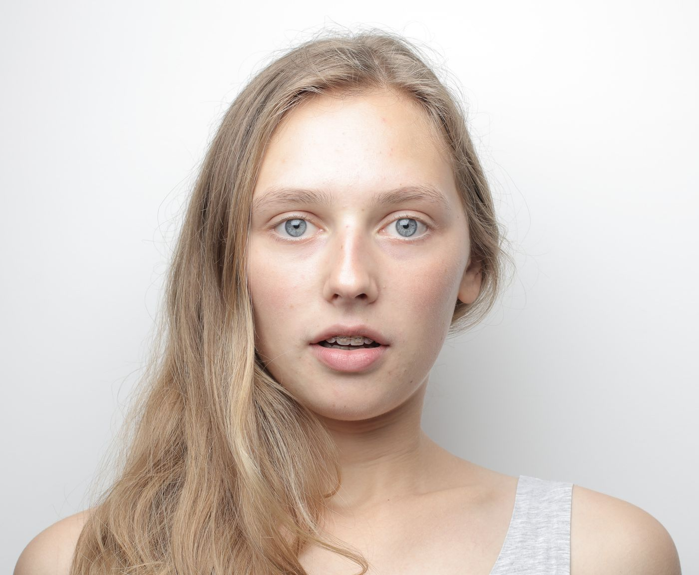
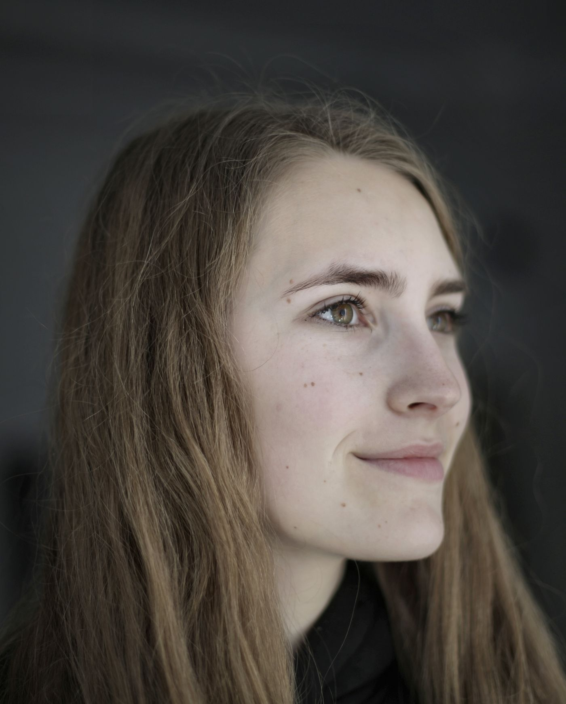
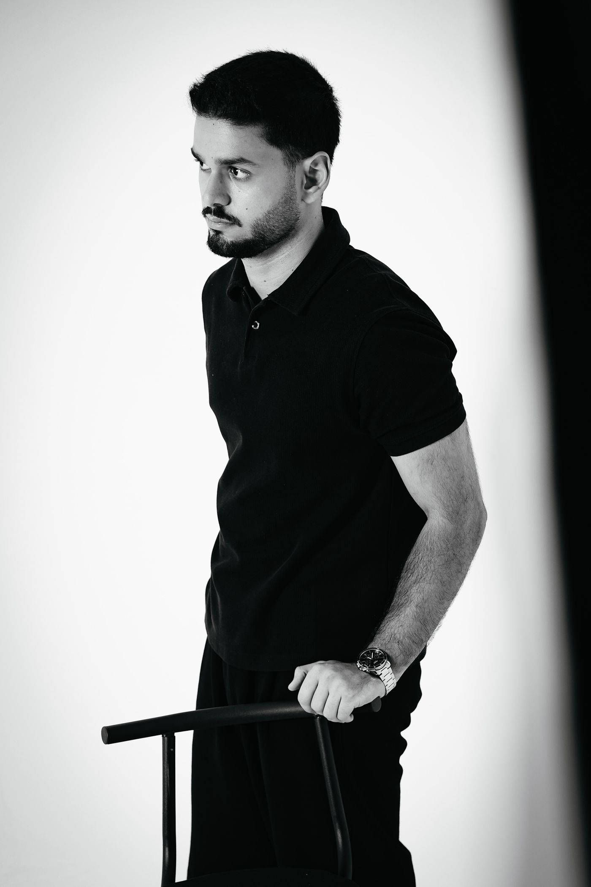
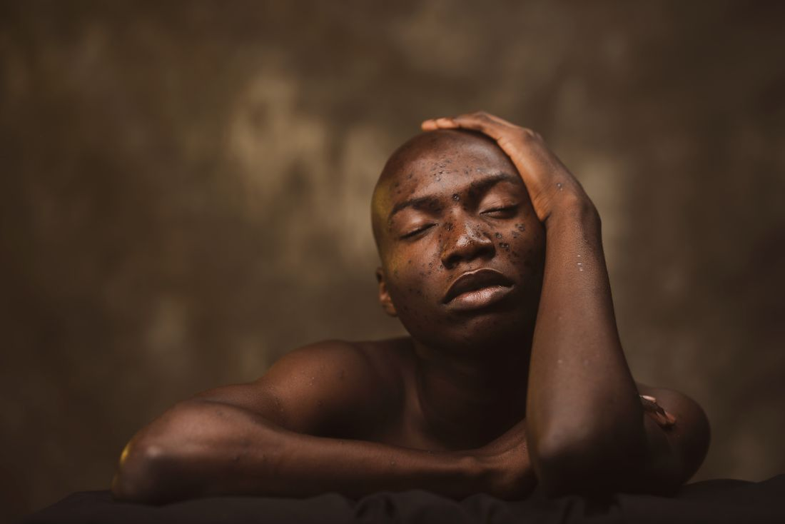
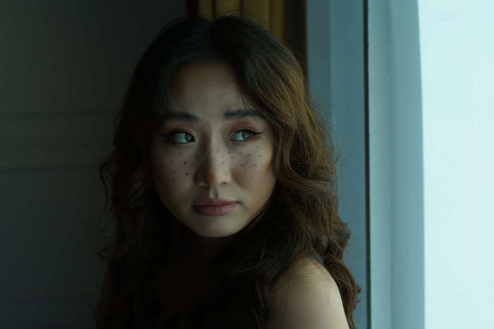
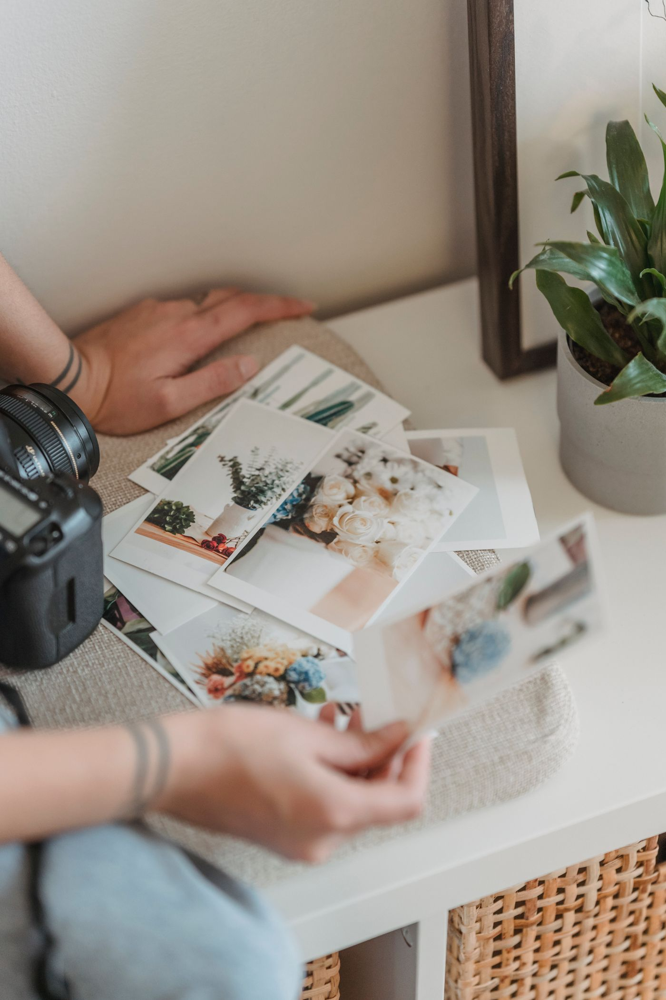

The art of
being human.
Portraits, families, and the quiet moments in between.
Photography that feels like you.
Selected moments.
View gallery Family
Family
 Portraits
Portraits
A face. A gesture.
A point of view.
Different faces, different ways of meeting the lens. A contact sheet of direct gazes, soft light and considered expression.




Room for everyone.
Portraits
Individual, professional and creative portraitsFamily
Connection across generationsMaternity
A record of this season
A quiet gaze.
A portrait study built around a single source of light. Small shifts in posture and expression give each frame its own rhythm.
Explore the collectionFrom first light
to final print.
Choose a session, talk through your ideas, then settle into the light. Afterward, a proof gallery brings your favorites together for editing and print.
Discover session packages
Small changes.
Different feelings.
A portrait takes shape in the conversation between light, movement and expression.


Watch the light.
Turning toward a window softens the shadows. Moving away adds definition. We use those small changes to find a frame that feels considered and comfortable.
Leave room to move.
A relaxed hand, a shift of weight, a breath between poses. Simple direction gives you something to do without holding a rigid expression.
Something to hold on to.
A photograph finds another life on paper. Start with a favorite frame, then consider how its size and finish will feel in your space.

The frame, the paper,
the place it belongs.
Small prints invite a closer look. A larger format gives the light and texture room to unfold. Matte and gloss options are available in the client print selection.
Review indicative sizes and prices in the client portal, or include your print ideas with a session enquiry.